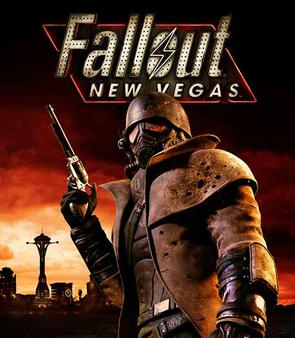

List Of Video Games!
1. Persona 3 Reload

Persona 3 Reload is a recent game that came out this year. It is a remake of the 2009 game Persona 3 with updated graphics and better improvements and additions of other releases like Persona 3 FES and Persona 3 Portable. It is a japanese RPG that was created by Atlus but published by SEGA. The reason why it is one of my favorite games as of recent is because I've played the original games before the remake came out. One of my friends recommended it to me back during High School and when the pandemic hit I started to play into Persona 3 Portable in which I really liked. The story and the characters are very unique and you can relate to them and be attached to them. There's many ways to use tactics against the enemies and many different activities to do that can improve and level up your stats.
2. Red Dead Redemption 2

Red Dead Redemption 2 is a shooting game kind of similar like GTA but set in the wild west era. This game takes you to the story of a gang during a time in which outlaws were very much dwindling becoming not as much frequent as they used to be as the law and pinkertons were now hunting them down. The game focuses on one person in which it tries to help the gang and also learn about himself and the adventures that they take to pass time around the area that they are in. The characters are very memorable, theres a lot of details that are very well done, you can fish, hunt, take down other gangs, take bounties, play blackjack and many more activities.
3. Fallout New Vegas 
Fallout New Vegas is a Role Playing Game that it is set in the post Apocalyptic World with a 1950s style setting. The game starts with the player trying to retrieve a very important object that it needed to deliver but later on in the story, we later find out how importatn this object is and how it is important for a lot of people. You can customize your character however you want, choose the skills and abilities that your character can use and the type of traits to inherit. You can make choices and this choices can affect of the world of this game. You can either be bad or good or even neutral. There's a lot of endings and also a lot of factions to join from. I like it because of the many things that you can do in this game. I also like the story and how a lot of your choices can affect many quests and parts of the world in the game.